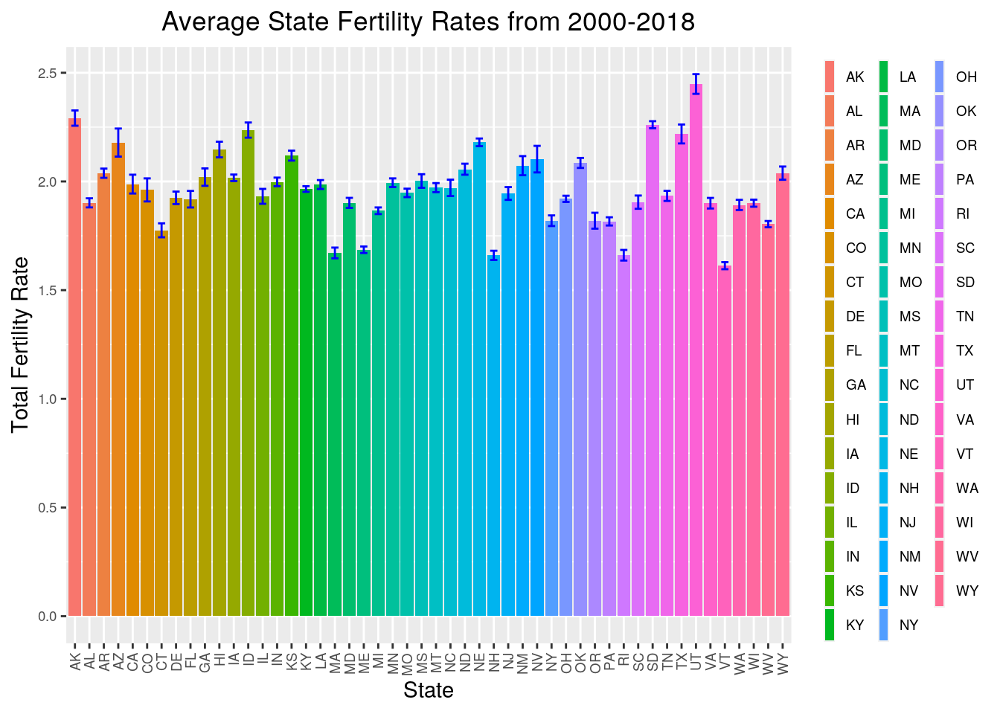

Introduction
In this data analysis project I am interested in examining the impact of winning a championship in one of U.S.A’s four major sports leagues (NBA, NHL, NFL, MLB) on the birth rate/total fertility rate of the winning state. The idea for this project came from a commercial I saw during the world cup many years ago about “world cup babies” and how the birth rates in the countries who win the world cup increase the following year. I wanted to explore this trend in the U.S. to see if it still holds. The birth rate data (total fertility rate, number of births, % population change) was obtained from the Population Reference Bureau (PRB) while the information on sports champions and the states they came from was acquired by combining the data from the respective sports league websites (i.e. NFL.com, MLB.com, etc.) It is worth noting that the % population change data was given for time periods (i.e. 2000-2010, 2011-2018) so it will not be an accurate indicator of year to year change. I think total fertility rate (TFR) and the number of births will be the best measuring statistics for this trend as opposed to percent population change as this indicator takes into account people moving to the state, deaths, and other factors not associated with births.
BirthRates <- read_excel("Birth Rates.xlsx")
Champions <- read_excel("Champions.xlsx")
# 3 numeric variables in data sets = year, Total Fertility
# Rate, Number of Birthshead(BirthRates)## # A tibble: 6 x 7
## FIPS NAME TYPE YEAR TFR BIRTHS `POP CHANGE`
## <dbl> <chr> <chr> <dbl> <dbl> <dbl> <dbl>
## 1 1 Alabama State 2000 2.02 63299 0.075
## 2 1 Alabama State 2001 1.94 60454 0.075
## 3 1 Alabama State 2002 1.88 58967 0.075
## 4 1 Alabama State 2003 1.92 59552 0.075
## 5 1 Alabama State 2004 1.91 59510 0.075
## 6 1 Alabama State 2005 1.93 60453 0.075head(Champions)## # A tibble: 6 x 9
## Year NFL MLB NHL NBA `NFL State` `MLB State` `NHL State` `NBA State`
## <dbl> <chr> <chr> <chr> <chr> <chr> <chr> <chr> <chr>
## 1 1970 Colts Orio… Brui… Knic… MD MD MA NY
## 2 1971 Cowbo… Pira… Cana… Bucks TX PA <NA> WI
## 3 1972 Dolph… Athl… Brui… Lake… FL CA MA CA
## 4 1973 Dolph… Athl… Cana… Knic… FL CA <NA> NY
## 5 1974 Steel… Athl… Flye… Celt… PA CA PA MA
## 6 1975 Steel… Reds Flye… Warr… PA OH PA CATidying: Rearranging Wide/Long
Champions2 <- Champions %>% pivot_longer(contains("State")) %>%
pivot_wider(names_from = "name") %>% select("Year", "NFL",
"NFL State", "MLB", "MLB State", "NHL", "NHL State", "NBA",
"NBA State")
Champions %>% pivot_longer(contains("State")) %>% pivot_wider(names_from = "name") %>%
select("Year", "NFL", "NFL State", "MLB", "MLB State", "NHL",
"NHL State", "NBA", "NBA State")## # A tibble: 51 x 9
## Year NFL `NFL State` MLB `MLB State` NHL `NHL State` NBA `NBA State`
## <dbl> <chr> <chr> <chr> <chr> <chr> <chr> <chr> <chr>
## 1 1970 Colts MD Orio… MD Brui… MA Knic… NY
## 2 1971 Cowb… TX Pira… PA Cana… <NA> Bucks WI
## 3 1972 Dolp… FL Athl… CA Brui… MA Lake… CA
## 4 1973 Dolp… FL Athl… CA Cana… <NA> Knic… NY
## 5 1974 Stee… PA Athl… CA Flye… PA Celt… MA
## 6 1975 Stee… PA Reds OH Flye… PA Warr… CA
## 7 1976 Raid… CA Reds OH Cana… <NA> Celt… MA
## 8 1977 Cowb… TX Yank… NY Cana… <NA> Trai… OR
## 9 1978 Stee… PA Yank… NY Cana… <NA> Bull… <NA>
## 10 1979 Stee… PA Pira… PA Cana… <NA> Supe… WA
## # … with 41 more rowsHere I am showing how pivot_longer and pivot_wider are inverses of one another. The pivot_longer step puts all of the league state column titles into one (changing number of columns from 9 to 7 and increasing the number of rows from 51 to 204) while the pivot_wider step essentially undoes this and gives each year its own row. The final select step makes the data easier to read with the corresponding state of the team located in the column directly to the right of the team name. This data format was saved as a new data set for joining in the future.
Joining Data Sets
BirthRates %>% left_join(Champions2, by = c(YEAR = "Year")) %>%
mutate(State_Code = state.abb[match(BirthRates$NAME, state.name)]) %>%
select(c(-"FIPS", -"TYPE", -"POP CHANGE")) %>% select(2,
1, 13, 3:12)## # A tibble: 950 x 13
## YEAR NAME State_Code TFR BIRTHS NFL `NFL State` MLB `MLB State` NHL
## <dbl> <chr> <chr> <dbl> <dbl> <chr> <chr> <chr> <chr> <chr>
## 1 2000 Alab… AL 2.02 63299 Rave… MD Yank… NY Devi…
## 2 2001 Alab… AL 1.94 60454 Patr… MA Diam… AZ Aval…
## 3 2002 Alab… AL 1.88 58967 Bucc… FL Ange… CA Red …
## 4 2003 Alab… AL 1.92 59552 Patr… MA Marl… FL Devi…
## 5 2004 Alab… AL 1.91 59510 Patr… MA Red … MA Ligh…
## 6 2005 Alab… AL 1.93 60453 Stee… PA Whit… IL <NA>
## 7 2006 Alab… AL 2.03 63232 Colts IN Card… MO Hurr…
## 8 2007 Alab… AL 2.07 64804 Gian… NY Red … MA Ducks
## 9 2008 Alab… AL 2.06 64546 Stee… PA Phil… PA Red …
## 10 2009 Alab… AL 1.96 62475 Sain… LA Yank… NY Peng…
## # … with 940 more rows, and 3 more variables: NHL State <chr>, NBA <chr>,
## # NBA State <chr>Project1Data <- BirthRates %>% left_join(Champions2, by = c(YEAR = "Year")) %>%
mutate(St_Code = state.abb[match(BirthRates$NAME, state.name)]) %>%
select(c(-"FIPS", -"TYPE", -"POP CHANGE")) %>% select(2,
1, 13, 3:12)I used left_join here to remove all the Champions data before the year 2000. This is not a problem to remove this data as we would only be able to look at the trend of interest for years containing birth rate data (Years 2000-2018). I then used mutate to create a new column with the state codes associated with the name of the state from the Birth Rates data as this will make it easier to match with the Champions data. I removed the ‘FIPS’ and ‘TYPE’ columns using select as this information was extraneous and repetitive while reordering the data frame to make it more readable. This modified data was then saved as a new dataframe
Wrangling
StateSummary <- Project1Data %>% group_by(NAME) %>%
summarize(mean(TFR), sd(TFR), mean(BIRTHS), sd(BIRTHS), IQR(TFR), IQR(BIRTHS), min(TFR), min(BIRTHS), max(TFR), max(BIRTHS), median (TFR), median (BIRTHS))
StateSummary## # A tibble: 50 x 13
## NAME `mean(TFR)` `sd(TFR)` `mean(BIRTHS)` `sd(BIRTHS)` `IQR(TFR)`
## <chr> <dbl> <dbl> <dbl> <dbl> <dbl>
## 1 Alabama 1.90 0.0915 60434. 2148. 0.120
## 2 Alaska 2.29 0.153 10820. 602. 0.225
## 3 Arizona 2.18 0.282 89558. 6613. 0.415
## 4 Arkansas 2.04 0.0924 38645. 1272. 0.120
## 5 California 1.99 0.189 518540 30833. 0.310
## 6 Colorado 1.96 0.231 67145. 2272. 0.325
## 7 Connecticut 1.78 0.140 39092. 3036. 0.275
## 8 Delaware 1.92 0.125 11269. 448. 0.210
## 9 Florida 1.92 0.166 219572. 9841. 0.285
## 10 Georgia 2.02 0.174 135655. 7172. 0.295
## # … with 40 more rows, and 7 more variables: IQR(BIRTHS) <dbl>, min(TFR) <dbl>,
## # min(BIRTHS) <dbl>, max(TFR) <dbl>, max(BIRTHS) <dbl>, median(TFR) <dbl>,
## # median(BIRTHS) <dbl># Only useful information from summarize in this case is mean and sd, the rest of the functions are to satisfy requirement for using 5 functions inside summarize. In total,
# I used mean, sd, IQR, min, max, and median inside of summarize.
Project1Data %>% full_join(StateSummary) %>%
group_by(NAME) %>%
mutate(TFR_to_mean = TFR/mean(TFR)) %>%
mutate(Births_to_mean = BIRTHS/mean(BIRTHS)) %>%
mutate(TFR_Pct_Chnge = (TFR/lag(TFR)-1)*100 ) %>%
mutate(Births_Pct_Chnge = (BIRTHS/lag(BIRTHS)-1)*100) %>%
filter(St_Code == `NFL State`) %>% # data for states which won the Superbowls
arrange(YEAR) %>%
select(1,7,2,4,28,26,5,29,27) %>%
filter(Births_Pct_Chnge > 0 | TFR_Pct_Chnge >0) %>%
mutate(Births_to_TFR = BIRTHS/TFR) #This is just to satisfy requirement for computing one variable as function of two others. Value doesn't signify any important data## # A tibble: 7 x 10
## # Groups: NAME [5]
## YEAR `NFL State` NAME TFR TFR_Pct_Chnge TFR_to_mean BIRTHS
## <dbl> <chr> <chr> <dbl> <dbl> <dbl> <dbl>
## 1 2001 MA Massachusetts 1.81 0.556 1.08 81077
## 2 2003 MA Massachusetts 1.74 1.75 1.04 80184
## 3 2005 PA Pennsylvania 1.86 0.541 1.02 145383
## 4 2006 IN Indiana 2.08 0.971 1.04 88631
## 5 2007 NY New York 1.92 1.59 1.06 253451
## 6 2014 MA Massachusetts 1.58 -1.25 0.946 71908
## 7 2015 CO Colorado 1.75 -1.13 0.892 66581
## # … with 3 more variables: Births_Pct_Chnge <dbl>, Births_to_mean <dbl>,
## # Births_to_TFR <dbl>Project1Data %>% full_join(StateSummary) %>%
group_by(NAME) %>%
mutate(TFR_to_mean = TFR/mean(TFR)) %>%
mutate(Births_to_mean = BIRTHS/mean(BIRTHS)) %>%
mutate(TFR_Pct_Chnge = (TFR/lag(TFR)-1)*100 ) %>%
mutate(Births_Pct_Chnge = (BIRTHS/lag(BIRTHS)-1)*100) %>%
filter(St_Code == `MLB State`) %>% # data for states which won the World Series
arrange(YEAR) %>%
select(1,9,2,4,28,26,5,29,27) %>%
filter(Births_Pct_Chnge > 0 | TFR_Pct_Chnge >0)%>%
mutate(Births_to_TFR = BIRTHS/TFR) #This is just to satisfy requirement for computing one variable as function of two others. Value doesn't signify any important data## # A tibble: 7 x 10
## # Groups: NAME [5]
## YEAR `MLB State` NAME TFR TFR_Pct_Chnge TFR_to_mean BIRTHS
## <dbl> <chr> <chr> <dbl> <dbl> <dbl> <dbl>
## 1 2001 AZ Arizona 2.64 -0.377 1.21 85597
## 2 2002 CA California 2.07 -3.72 1.04 529357
## 3 2003 FL Florida 2.01 0.500 1.05 212250
## 4 2006 MO Missouri 2.07 4.02 1.06 81385
## 5 2007 MA Massachusetts 1.8 1.12 1.08 77967
## 6 2012 CA California 1.89 -0.526 0.951 503755
## 7 2014 CA California 1.84 0 0.926 502879
## # … with 3 more variables: Births_Pct_Chnge <dbl>, Births_to_mean <dbl>,
## # Births_to_TFR <dbl>Project1Data %>% full_join(StateSummary) %>%
group_by(NAME) %>%
mutate(TFR_to_mean = TFR/mean(TFR)) %>%
mutate(Births_to_mean = BIRTHS/mean(BIRTHS)) %>%
mutate(TFR_Pct_Chnge = (TFR/lag(TFR)-1)*100 ) %>%
mutate(Births_Pct_Chnge = (BIRTHS/lag(BIRTHS)-1)*100) %>%
filter(St_Code == `NBA State`) %>% # data for states which won the NBA championship
arrange(YEAR) %>%
select(1,13,2,4,28,26,5,29,27) %>%
filter(Births_Pct_Chnge > 0 | TFR_Pct_Chnge >0)%>%
mutate(Births_to_TFR = BIRTHS/TFR) #This is just to satisfy requirement for computing one variable as function of two others. Value doesn't signify any important data## # A tibble: 7 x 10
## # Groups: NAME [3]
## YEAR `NBA State` NAME TFR TFR_Pct_Chnge TFR_to_mean BIRTHS
## <dbl> <chr> <chr> <dbl> <dbl> <dbl> <dbl>
## 1 2002 CA California 2.07 -3.72 1.04 529357
## 2 2003 TX Texas 2.35 0 1.06 377476
## 3 2005 TX Texas 2.34 0 1.05 385915
## 4 2006 FL Florida 2.09 1.46 1.09 236802
## 5 2007 TX Texas 2.4 1.69 1.08 407625
## 6 2013 FL Florida 1.77 0 0.923 215407
## 7 2014 TX Texas 2.09 0.966 0.942 399766
## # … with 3 more variables: Births_Pct_Chnge <dbl>, Births_to_mean <dbl>,
## # Births_to_TFR <dbl>Project1Data %>% full_join(StateSummary) %>%
group_by(NAME) %>%
mutate(TFR_to_mean = TFR/mean(TFR)) %>%
mutate(Births_to_mean = BIRTHS/mean(BIRTHS)) %>%
mutate(TFR_Pct_Chnge = (TFR/lag(TFR)-1)*100 ) %>%
mutate(Births_Pct_Chnge = (BIRTHS/lag(BIRTHS)-1)*100) %>%
filter(St_Code == `NHL State`) %>% # data for states which won the Stanley Cup
arrange(YEAR) %>%
select(1,11,2,4,28,26,5,29,27) %>%
filter(Births_Pct_Chnge > 0 | TFR_Pct_Chnge >0)%>%
mutate(Births_to_TFR = BIRTHS/TFR) #This is just to satisfy requirement for computing one variable as function of two others. Value doesn't signify any important data## # A tibble: 8 x 10
## # Groups: NAME [6]
## YEAR `NHL State` NAME TFR TFR_Pct_Chnge TFR_to_mean BIRTHS
## <dbl> <chr> <chr> <dbl> <dbl> <dbl> <dbl>
## 1 2001 CO Colorado 2.4 1.69 1.22 67007
## 2 2003 NJ New Jersey 2.05 1.99 1.05 116983
## 3 2004 FL Florida 2.02 0.498 1.05 218053
## 4 2006 NC North Carolina 2.13 3.40 1.08 127859
## 5 2007 CA California 2.2 0.457 1.11 566414
## 6 2011 MA Massachusetts 1.67 0 0.999 73166
## 7 2012 CA California 1.89 -0.526 0.951 503755
## 8 2014 CA California 1.84 0 0.926 502879
## # … with 3 more variables: Births_Pct_Chnge <dbl>, Births_to_mean <dbl>,
## # Births_to_TFR <dbl>Summary statistics (mean, sd) were computed for fertility rate and number of births and saved as a separate data frame before being added to the full project data set. At this point the data was grouped by state so that a column could be mutated onto the dataframe to denote the percentage change for fertility rate/births from the previous year. This not only allows one to see if the fertility rate/births for the championship winning state is higher than the average for that state but also allows to see if it was a relative increase from the previous year. This process was carried out separately for NFL, MLB, NBA, and NHL to make the individually filtered dataframes easier to digest. For states which won the superbowl, 6 of the 17 possible entries had a positive % increase in either fertility rate or total number of births from the previous year. For states which won the World Series (MLB), this trend held for 7 out of 17. For states which won the NBA championship, this trend held for 6 out of 17. For states which won the Stanley Cup (NHL), this trend held for 8 out of 17. The mean and sd are useful statistics for comparison in this case however they are not as informative as the year to year percentage change. In most cases however the mean for either TFR or Births was higher than the average from 2000-2017.
Visualizing
# HEATMAP
numeric_data <- Project1Data %>% full_join(StateSummary) %>%
group_by(NAME) %>% mutate(TFR_to_mean = TFR/mean(TFR)) %>%
mutate(Births_to_mean = BIRTHS/mean(BIRTHS)) %>% mutate(TFR_Pct_Chnge = (TFR/lag(TFR) -
1) * 100) %>% mutate(Births_Pct_Chnge = (BIRTHS/lag(BIRTHS) -
1) * 100) %>% filter(St_Code == `NFL State` | St_Code ==
`MLB State` | St_Code == `NBA State` | St_Code == `NHL State`) %>%
arrange(YEAR) %>% select(2, 3, 4, 26, 28, 5, 27, 29) %>%
ungroup %>% select_if(is.numeric)
# numeric data set contains the TFR and Birth data relative
# to the mean as well as the previous year for the rows where
# the state won a championship in one of the 4 major sports
# leagues.
correlation_mat <- numeric_data %>% cor(use = "pair")
correlation_mat %>% as.data.frame %>% rownames_to_column("var1") %>%
pivot_longer(-1, names_to = "var2", values_to = "correlation") %>%
ggplot(aes(var1, var2, fill = correlation)) + geom_tile() +
scale_fill_gradient2(low = "red", mid = "white", high = "blue") +
geom_text(aes(label = round(correlation, 2)), color = "black",
size = 4) + theme(axis.text.x = element_text(angle = 90,
hjust = 1)) + coord_fixed()The correlation heatmap above contains 4 data points for each year, corresponding to the birth/TFR data for the state which won a sports championship. You can see that for most variables there is a weak but positive correlation. This makes sense according to the data analysis in the previous section of the report because most of the time a state won a sports championship the births or total fertility rate were higher than the average from 2000-2018 or there was an increase in the statistic from the previous year
Project1Data %>% ggplot(aes(YEAR, BIRTHS)) + geom_point(aes(color = St_Code)) +
ggtitle("Total Births per State from 2000-2018") + theme(plot.title = element_text(hjust = 0.5)) +
xlab("Year") + ylab("Total Number of Births") + scale_x_continuous(breaks = seq(2000,
2018, by = 1)) + theme(axis.text.x = element_text(angle = 45,
vjust = 0.9, hjust = 1)) + scale_y_continuous(trans = "log10") +
scale_color_viridis_d() + theme(legend.text = element_text(size = 7)) +
theme(legend.title = element_blank())The total number of births by state over time is visualized above. Other than California, the total number of births do not vary much over the period of 2000-2018, with most state having a total variation of less than 10%. This helps drive home the point that there may be a correlation between a state winning a major sports championship and observing an elevated number of births the following year (either percent increase, or relative to the mean).
Project1Data %>% ggplot(aes(St_Code, TFR, fill = St_Code)) +
geom_bar(stat = "summary") + geom_errorbar(aes(y = TFR),
stat = "summary", width = 0.5, color = "blue") + theme(axis.text.x = element_text(angle = 90,
vjust = 0.5, hjust = 1)) + xlab("State") + ylab("Total Fertility Rate") +
theme(axis.text = element_text(size = 7)) + ggtitle("Average State Fertility Rates from 2000-2018") +
theme(plot.title = element_text(hjust = 0.5)) + theme(legend.text = element_text(size = 7)) +
theme(legend.key.width = unit(0.2, "cm")) + theme(legend.title = element_blank()) The average fertility rate for each state over the time period of 2000-2018 is visualized above. These averages all have small errors associated with them indicating that total fertility rate is a useful value for analyzing changes in birth rates. Due to the stability of this statistic, a relative increase in this value may be partially correlated to the winning of a major sports championship in that state.
Dimensionality Reduction
pam_clust_dat <- Project1Data %>% select(YEAR, TFR, BIRTHS) #create dataset for cluster analysis
project_pam <- pam_clust_dat %>% scale %>% pam(k = 7) #perform PAM clustering with k = 7
project_pam## Medoids:
## ID YEAR TFR BIRTHS
## [1,] 745 -1.0948684 -0.1835261 -0.266996867
## [2,] 862 -0.5474342 0.3791951 0.289650532
## [3,] 792 0.5474342 -0.4648867 -0.003206095
## [4,] 758 1.2773465 -0.9807145 -0.248932075
## [5,] 519 -0.7299123 1.4108507 -0.463127365
## [6,] 204 0.7299123 0.5198754 -0.658190835
## [7,] 809 0.1824781 0.8950229 3.259201364
## Clustering vector:
## [1] 1 1 1 1 1 1 2 2 2 3 3 3 3 3 3 4 4 4 4 5 5 5 5 5 5 5 5 5 5 5 6 6 6 6 6 6 6
## [38] 6 5 5 5 5 5 5 5 5 5 2 2 3 3 3 3 3 4 4 4 5 1 1 1 1 2 5 5 5 6 6 6 6 3 6 6 6
## [75] 4 4 7 7 7 7 7 7 7 7 7 7 7 7 7 7 7 7 7 7 7 5 5 5 2 2
## [ reached getOption("max.print") -- omitted 850 entries ]
## Objective function:
## build swap
## 0.7875561 0.7657307
##
## Available components:
## [1] "medoids" "id.med" "clustering" "objective" "isolation"
## [6] "clusinfo" "silinfo" "diss" "call" "data"projectclust <- pam_clust_dat %>% mutate(cluster = as.factor(project_pam$clustering)) #create dataset with clusters for visualization
projectclust$silinfo$avg.width## NULLsil_width <- vector()
for (i in 2:10) {
pam_fit <- pam(pam_clust_dat, k = i)
sil_width[i] <- pam_fit$silinfo$avg.width
}
ggplot() + geom_line(aes(x = 1:10, y = sil_width)) + scale_x_continuous(name = "k",
breaks = 1:10) #confirm best value for k is 7 by graphing average silhouette widthprojectclust %>% plot_ly(x = ~YEAR, y = ~TFR, z = ~BIRTHS, color = ~cluster,
type = "scatter3d", mode = "markers")This data makes some sense when considering the datatables from the wrangling step. For example, there were approximately 6 or 7 data points which showed either a positive increase in TFR/BIRTHS or a value higher than the mean for states which won a major sports championship. This corresponds to the average silhouette width indicating that 7 groups is a good marker for PAM clustering. Additionally, those 6 or 7 data points showed groupings in the early 2000’s (2000-2006) and then an additional groupings the mid 2010’s (2013-2016). These time periods correspond to the color groupings on the visualization above indicating that the PAM clustering was useful in reinforcing the idea that states which won a major sports championship were more likely to observe and increased Birth/TFR rate. Some of the groupings are a little off however due to the realtive difference in total Births for some of the larger states like California and Texas.
In conclusion, it appears that there is a weak positive correlation with the Birth rate/TFR of state and winning a championship in one of the 4 major sports leagues (NFL, NBA, MLB, NHL). This was supported by calculation of summary statistics, correlation visualization, and PAM clustering. This analysis could be improved by scaling TFR/Birth values to account for differences in state populations as the larger states (Texas, California) had Birth/TFR values higher than most. Overall, I would say this data analysis project was informative and revealed some trends that might not be so obvious to the naked eye.
## R version 3.6.1 (2019-07-05)
## Platform: x86_64-pc-linux-gnu (64-bit)
## Running under: Ubuntu 18.04.5 LTS
##
## Matrix products: default
## BLAS: /stor/system/opt/R/R-3.6.1/lib/R/lib/libRblas.so
## LAPACK: /stor/system/opt/R/R-3.6.1/lib/R/lib/libRlapack.so
##
## locale:
## [1] LC_CTYPE=en_US.UTF-8 LC_NUMERIC=C
## [3] LC_TIME=en_US.UTF-8 LC_COLLATE=en_US.UTF-8
## [5] LC_MONETARY=en_US.UTF-8 LC_MESSAGES=en_US.UTF-8
## [7] LC_PAPER=en_US.UTF-8 LC_NAME=C
## [9] LC_ADDRESS=C LC_TELEPHONE=C
## [11] LC_MEASUREMENT=en_US.UTF-8 LC_IDENTIFICATION=C
##
## attached base packages:
## [1] stats graphics grDevices utils datasets methods base
##
## other attached packages:
## [1] plotly_4.9.2.2 cluster_2.1.0 readxl_1.3.1 forcats_0.5.1
## [5] stringr_1.4.0 dplyr_1.0.6 purrr_0.3.4 readr_1.4.0
## [9] tidyr_1.1.3 tibble_3.1.1 ggplot2_3.3.3 tidyverse_1.3.1
##
## loaded via a namespace (and not attached):
## [1] Rcpp_1.0.5 lubridate_1.7.10 assertthat_0.2.1 digest_0.6.27
## [5] utf8_1.1.4 R6_2.5.0 cellranger_1.1.0 backports_1.2.1
## [9] reprex_2.0.0 evaluate_0.14 httr_1.4.2 blogdown_0.20
## [13] pillar_1.6.0 rlang_0.4.10 lazyeval_0.2.2 rstudioapi_0.13
## [17] data.table_1.13.6 rmarkdown_2.6 labeling_0.4.2 htmlwidgets_1.5.3
## [21] munsell_0.5.0 broom_0.7.6 compiler_3.6.1 modelr_0.1.8
## [25] xfun_0.22 pkgconfig_2.0.3 htmltools_0.5.0 tidyselect_1.1.0
## [29] bookdown_0.21 fansi_0.4.1 viridisLite_0.3.0 crayon_1.4.1
## [33] dbplyr_2.1.1 withr_2.3.0 grid_3.6.1 jsonlite_1.7.2
## [37] gtable_0.3.0 lifecycle_1.0.0 DBI_1.1.0 magrittr_2.0.1
## [41] formatR_1.7 scales_1.1.1 cli_2.5.0 stringi_1.5.3
## [45] farver_2.0.3 fs_1.5.0 xml2_1.3.2 ellipsis_0.3.1
## [49] generics_0.1.0 vctrs_0.3.6 RColorBrewer_1.1-2 tools_3.6.1
## [53] glue_1.4.2 hms_1.0.0 crosstalk_1.1.0.1 yaml_2.2.1
## [57] colorspace_2.0-0 rvest_1.0.0 knitr_1.30 haven_2.3.1## [1] "2021-05-07 13:47:20 CDT"## sysname
## "Linux"
## release
## "4.15.0-142-generic"
## version
## "#146-Ubuntu SMP Tue Apr 13 01:11:19 UTC 2021"
## nodename
## "educcomp02.ccbb.utexas.edu"
## machine
## "x86_64"
## login
## "unknown"
## user
## "kjj865"
## effective_user
## "kjj865"